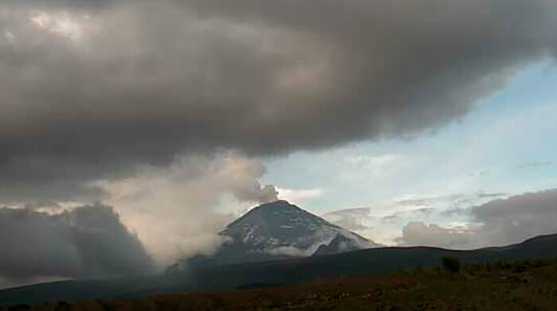

Ceniza del volcán Cotopaxi cae levemente en Latacunga
La Secretaría de Gestión de Riesgos de Ecuador informó que se registra una caída leve de ceniza del volcán Cotopaxi, en la parroquia de Mulaló, Latacunga, la noche de este miércoles 11 de enero de 2023.
